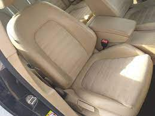

Explora las increíbles características de este icónico modelo.
El Volkswagen Passat es un referente en el mundo automotriz, conocido por su elegancia, rendimiento y tecnología innovadora.
Con líneas aerodinámicas y un estilo moderno, el Passat destaca en la carretera. Su diseño no solo es atractivo, sino que también mejora la eficiencia y el manejo.
Equipado con motores potentes y tecnologías avanzadas, el Passat ofrece un rendimiento excepcional. Desde la aceleración suave hasta la eficiencia en el consumo de combustible, este modelo está diseñado para impresionar.
El Passat cuenta con características tecnológicas de última generación, como sistemas de infoentretenimiento intuitivos, asistentes de conducción avanzados y opciones de conectividad que hacen que cada viaje sea cómodo y conectado.
La seguridad es una prioridad con características como frenado automático de emergencia, control de crucero adaptativo y alerta de cambio de carril, que trabajan juntas para proporcionar una experiencia de conducción segura.
|  |